|
平成２０年度 活動記録 |
2009/3/30・31 | |
◆ 春合宿（奥多摩・雲取山） 参加者：生徒６名 教員２名 |
JR奥多摩駅 ⇒ 鴨沢 → 堂所 → 七ツ石山分岐 → 奥多摩小屋 → 雲取山 → 奥多摩小屋（幕営） → 七ツ石山 → 鷹ノ巣山 → 六ツ石山 → JR奥多摩駅 |
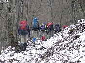 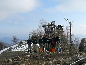 | |
2009/3/15 | |
◆ ニュージーランド・Mt.Pirongia登頂 参加者：教員１名 |
ニュージーランドでの研修の休日に、北島の中部、ワイカト地区で最も標高の高いMt.Pirongia(975m)に登った。裾野のとても広い、古い火山で、周辺には広大な原生林が広がる。頂上(Summit)からの展望は、まさに360度の大パノラマ。果てしない地平線や遠くに海岸線が広がり、地球の中心に立っているような感覚になった。日本とは違う広大な自然に大感激！ |
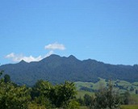 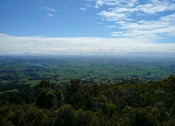 | |
2009/2/11 | |
◆ ウィンターハイキング（扇山〜百蔵山） |
JR鳥沢駅 → 梨の木平 → 大久保のコル → 扇山 → 大久保のコル → コタヤ山の下 → 百蔵山 → 旧いこいの森 → 総合グランド → JR猿橋駅 |
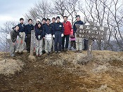 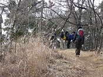 | |
2009/1/11 | |
◆ 葛飾柴又ロードレース（10km） 参加者：生徒７名 教員１名 |
12月から１月にかけてのトレーニングの成果を確認する機会として、初詣を兼ねて、葛飾柴又ロードレースの10kmコースに全員で参加した。それぞれのペースをしっかりと保って、まあまあの記録を出すことができた。終了後は柴又帝釈天で初詣。天気にも恵まれ、とても気持ちのよい一日になった。 |
| |
2008/12/26〜28 | |
◆ 冬合宿（赤城・黒檜山／谷川岳） 参加者：生徒７名 教員３名 |
JR前橋駅 ⇒ 黒檜山登山口 → 猫岩 → 黒檜山頂上下 → 猫岩 → 赤城山ビジターセンター ⇒ 国立青少年交流センター（泊） ⇒ JR渋川駅 ⇒ JR土合駅 → ロープーウェイ駅 → JR土合駅 |
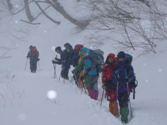 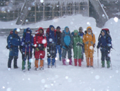 | |
2008/11/23・24 | |
◆ 秋合宿（乾徳山） 参加者：生徒７名 教員３名 OB１名 |
JR塩山駅 ⇒ 徳和 → 道満尾根 → 道満山 → 大平小屋（幕営） → 扇平 → 天狗岩 → 乾徳山 → 笠盛山 → 黒金山 → 牛首のタル → 青笹 ⇒ JR山梨市駅 |
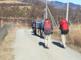
| |
2008/10/26 | |
◆ 武蔵越生ハイキング大会 参加者：生徒７名 教員３名 |
東武越生駅 → 中央公民館 → 大高取山 → 傘杉峠 → 顔振峠 → 一本杉峠 → 鼻曲山 → 桂木観音 → 中央公民館 → 東武越生駅 |
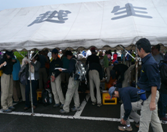 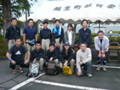 | |
2008/9/13・14 | |
◆ 槐祭（学園祭）展示と山の歌コンサート |
復部記念特別展示というテーマで学園祭に参加した。教室内にテントを設営し、ザック、コンロなどの登山道具を展示。部の歴史や合宿写真なども展示した。正面に学校から拝借したヒマラヤの大写真パネルを置き、その前に舞台を作り、２日間で４度の山の歌コンサートを実施した。地味な部活動であるがその活動を精一杯アピールすることができた。OBも5名が来校し、運営の協力をしてくれた。 |
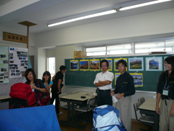 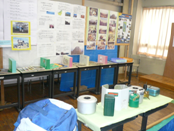 | |
2008/8/1〜6 | |
◆ 夏合宿（南アルプス・白峰三山） 参加者：生徒５名 教員３名 |
JR甲府駅 ⇒ 広河原（幕営） → 大樺沢上部二俣 → 小太郎尾根分岐 → 北岳肩ノ小屋（幕営） → 北岳 → 北岳山荘 → 間ノ岳 → 農鳥小屋（幕営） → 農鳥岳 → 大門沢下降点 → 大門沢小屋（幕営） → 八丁坂 → 第１発電所 → 奈良田 ⇒ 早川村・ビラ雨畑（宿泊） ⇒ 身延山久遠寺見学 ⇒ JR身延駅 |
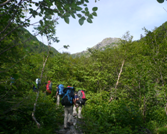
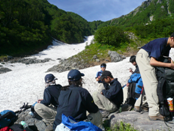 | |
2008/7/20・21 | |
◆ 夏合宿訓練合宿（大菩薩連嶺） 参加者：生徒４名 教員２名 |
JR塩山駅 ⇒ 裂石 → 雲峰寺見学 → 上日川峠 → 福ちゃん荘（幕営） → 大菩薩峠 → 石丸峠 → 小金沢山 → 黒岳 → 湯ノ沢峠 → JR甲斐大和駅 |
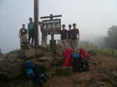 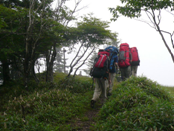 | |
2008/6/21・22 | |
◆ 技術研修合宿（奥多摩・大岳山） 参加者：生徒４名 教員３名 |
JR奥多摩駅 → 氷川キャンプ場（幕営） → 大ダワ林道 → 鋸山 → 大岳山 → 御岳山 → JR御岳駅 |
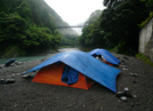 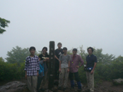 | |
2008/5/3 | |
◆ 新入生歓迎山行（奥多摩・御岳山） 参加者：生徒４名 教員３名 |
JR古里駅 → 大塚山 → 御岳山 → 日ノ出山 → 麻生山 → JR五日市駅 |
| |

 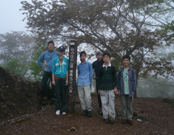
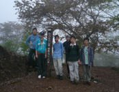